There's an open idea on the FME Community to Improve Customize Options for FME Flow Apps. If you would like to see more flexibility and design options for Flow apps, we encourage you to Upvote the idea.
After completing this lesson, you'll be able to:
In this lesson, you will:
After completing this lesson, you'll be able to:
In this lesson, you will:
If you're taking a live Safe Software-hosted training course or using an on-demand lab for this course, we've already imported the content for this lesson into your FME Flow.
If you're completing this lesson with your own FME Flow, you must import the starting project with the content into your FME Flow.
See FME Flow Authoring: Instructions to Import the Starting Project for directions to import the project to your own FME Flow.
You can customize the appearance of FME Flow apps in the Customize section when creating the app. The customization options are mostly the same for all the Flow apps. You may change the color, add logos, and set banner images to tailor your Flow app to match your organization's branding. Ultimately, you can customize your app so that it appears not to use FME at all.
| Browser Icon | Sets the icon next to the app name in the browser tab (300 KB file size limit) | 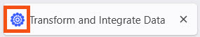 |
| Heading Background Color | A banner of color spans the top of the app and fills the color behind the heading banner if it is transparent. | 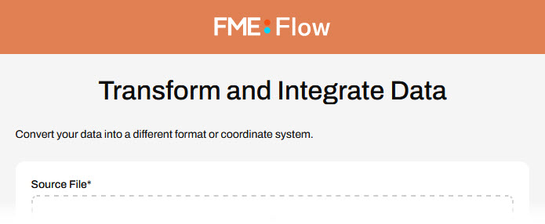 |
| Heading Logo | Image or icon centered over the heading banner (1 MB file size limit) | 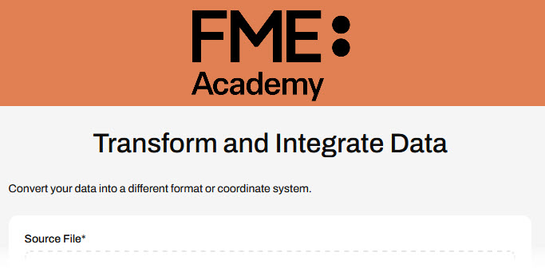 |
| Heading Banner | Image that covers the banner span of the top of the app page (1 MB file size limit) | 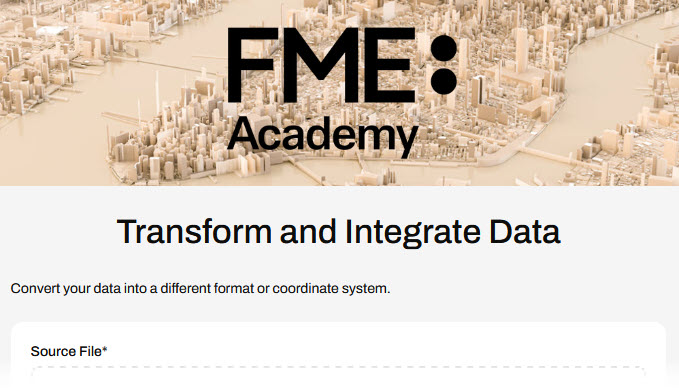 |
| Footer Text | Text that appears after the app content at the bottom of the app page | 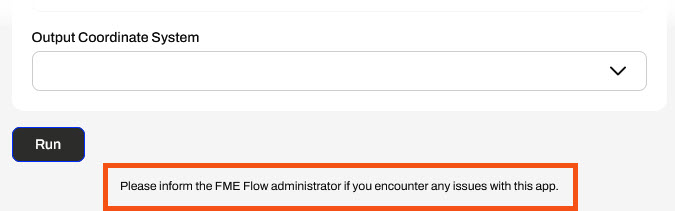 |
| Footer Logo | An image or icon that appears beneath the footer text, centered on the footer banner (1 MB file size limit) | 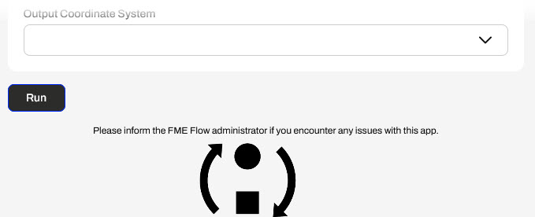 |
| Footer Banner | An image that comprises the banner spans the bottom of the app page (1 MB file size limit) | 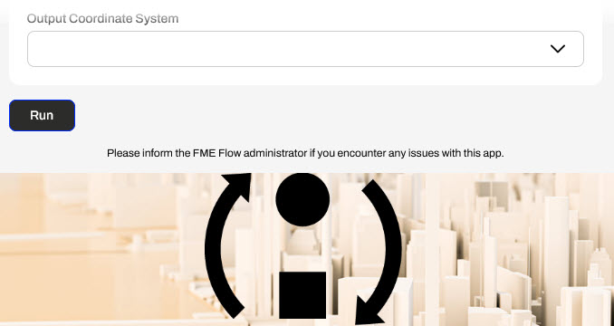 |
The last two options in the Customize section are toggles to turn on Run Immediately and Log Debug. The Run Immediately option will run the workspace as soon as you open the app, without configuring any parameters. The Log Debug option logs more details about the workspace translation in the job log for troubleshooting. Log Debug does impact workspace performance, so you should only use it when troubleshooting your workflows.
There's an open idea on the FME Community to Improve Customize Options for FME Flow Apps. If you would like to see more flexibility and design options for Flow apps, we encourage you to Upvote the idea.
The content used in this lesson builds on the previous lesson. To do this exercise, you may continue with your workspace app from Transform Data with Workspace Apps.
Jennifer, a GIS Specialist, wants her CAD validation app to look like it belongs to her organization, not FME. The default imagery tells her colleagues nothing about who owns the app or what team to ask for help. She has a logo and a banner ready to apply.
In this exercise, you will:
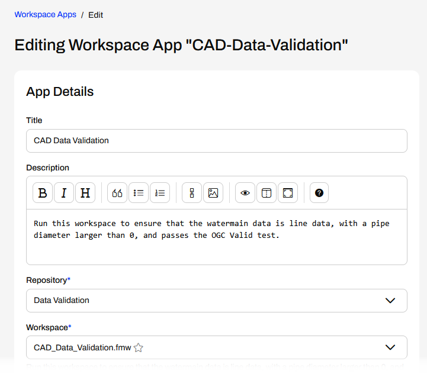
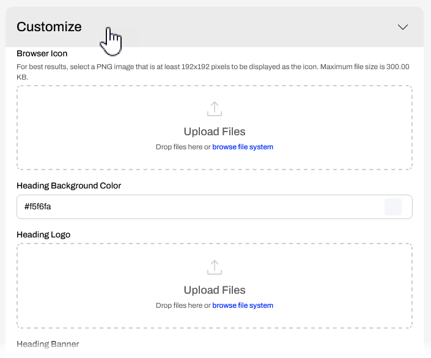
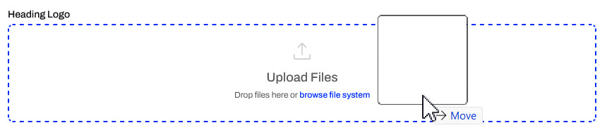
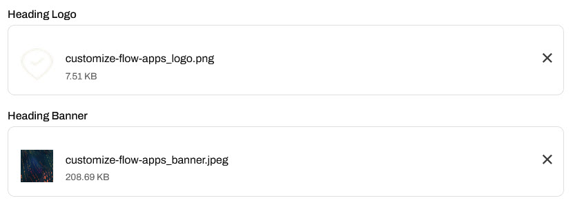
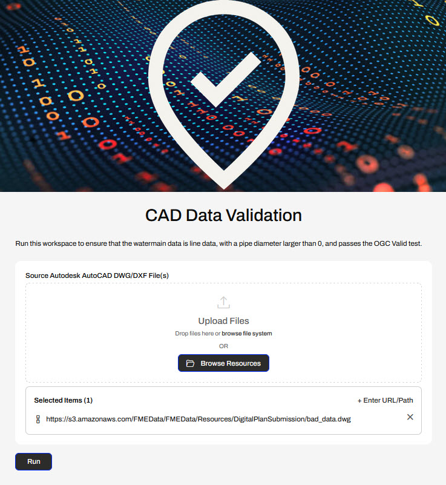
You have built and customized an FME Flow workspace app that validates CAD data input and returns a validation report to the user.
If you're taking a live Safe Software-hosted training course or using an on-demand lab for this course, we've already imported the content for this lesson into your FME Flow.
If you're completing this lesson with your own FME Flow, you must import the starting project with the content into your FME Flow.
See FME Flow Authoring: Instructions to Import the Starting Project for directions to import the project to your own FME Flow.
You can customize the appearance of FME Flow apps in the Customize section when creating the app. The customization options are mostly the same for all the Flow apps. You may change the color, add logos, and set banner images to tailor your Flow app to match your organization's branding. Ultimately, you can customize your app so that it appears not to use FME at all.
| Browser Icon | Sets the icon next to the app name in the browser tab (300 KB file size limit) | |
| Heading Background Color | A banner of color spans the top of the app and fills the color behind the heading banner if it is transparent. | |
| Heading Logo | Image or icon centered over the heading banner (1 MB file size limit) | |
| Heading Banner | Image that covers the banner span of the top of the app page (1 MB file size limit) | |
| Footer Text | Text that appears after the app content at the bottom of the app page | |
| Footer Logo | An image or icon that appears beneath the footer text, centered on the footer banner (1 MB file size limit) | |
| Footer Banner | An image that comprises the banner spans the bottom of the app page (1 MB file size limit) |
The last two options in the Customize section are toggles to turn on Run Immediately and Log Debug. The Run Immediately option will run the workspace as soon as you open the app, without configuring any parameters. The Log Debug option logs more details about the workspace translation in the job log for troubleshooting. Log Debug does impact workspace performance, so you should only use it when troubleshooting your workflows.
There's an open idea on the FME Community to Improve Customize Options for FME Flow Apps. If you would like to see more flexibility and design options for Flow apps, we encourage you to Upvote the idea.
The content used in this lesson builds on the previous lesson. To do this exercise, you may continue with your workspace app from Transform Data with Workspace Apps.
Jennifer, a GIS Specialist, wants her CAD validation app to look like it belongs to her organization, not FME. The default imagery tells her colleagues nothing about who owns the app or what team to ask for help. She has a logo and a banner ready to apply.
In this exercise, you will:
You have built and customized an FME Flow workspace app that validates CAD data input and returns a validation report to the user.